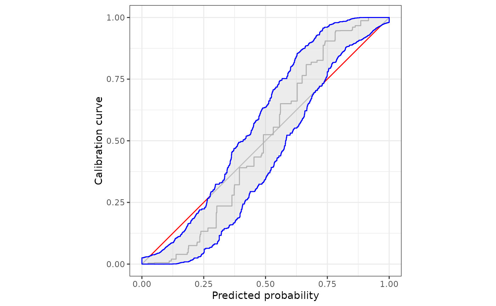
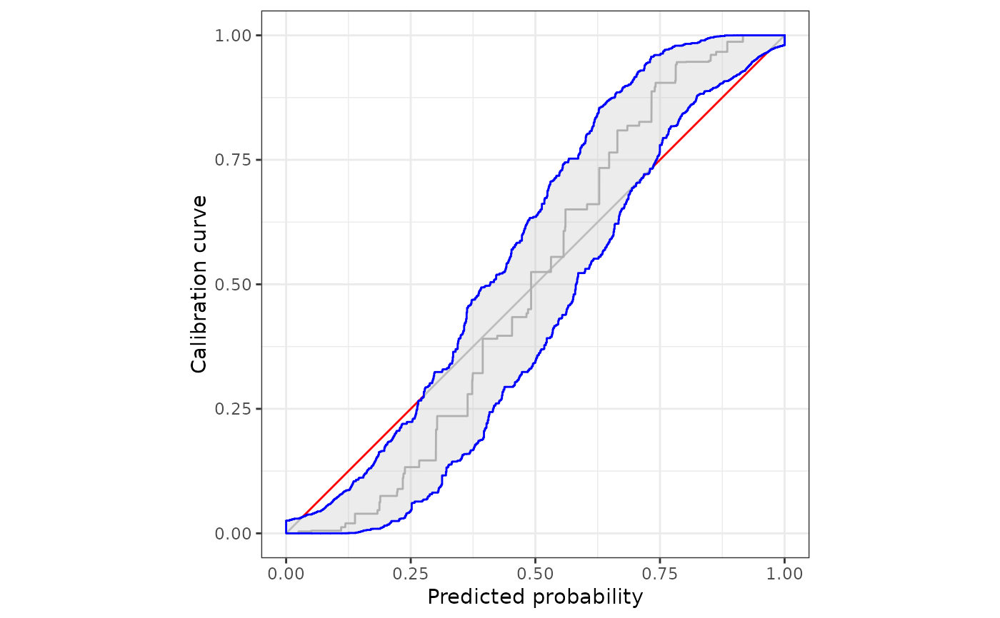

Uses the ggplot2 package to illustrate monotone confidence bands to assess calibration of prediction methods that issue probability forecasts.
Usage
# S3 method for calibrationband
autoplot(
object,
...,
approx.equi = NULL,
cut.bands = FALSE,
p_ribbon = NULL,
p_isoreg = NULL,
p_diag = NULL
)
# S3 method for calibrationband
autolayer(
object,
...,
approx.equi = NULL,
cut.bands = FALSE,
p_diag = NA,
p_isoreg = NA,
p_ribbon = NA
)
# S3 method for calibrationband
plot(x, ...)Arguments
- object
object of class
calibrationband- ...
Further arguments to be passed to or from methods.
- approx.equi
If
NULL, the bands are drawn for each prediction-realization pair. If it is a scalar, sayz, the bounds are approximated atzequidistant point on the x-axis. Also see the effect ofcut.bandsif a scalar is specified.In large data sets,
approx.equi = NULLmight result in capacity-consuming plots. In these cases, we recommend to setapprox.equiequal to a value that is at least 200.Note, we add important additional points the initial scalar of
approx.equito assure accurate transition areas (changes between miscalibrated and calibrated areas).- cut.bands
Cut the bands at most extreme prediction values. Bands will not be extended to 0 and 1 respectively if option is set equal to true.
- p_ribbon
If non
NULL, a ribbon is drawn. Contains a list of arguments forggplot2::geom_polygon. See details for default list settings.- p_isoreg
If non
NULLthe isotonic regression curve is drawn. Contains a list of arguments forggplot2::geom_line. See details for default list settings.- p_diag
If non
NULL, the diagonal line is drawn. Contains list of arguments forggplot2::geom_segment.- x
object of class
calibrationband
Details
When plotting the monotone confidence band, the upper bound should be
extended to the left, that is, the bound at x[i] is valid on the
interval (x[i-1],x[i]]. The lower bound should be extended to the
right, i.e. the bound at x[i] is extended to the interval [x[i],x[i +
1]). This function creates x and y values for correct plotting of these
bounds.
autoplot behaves like any ggplot() + layer() combination.
That means, customized plots should be created using autoplot and
autolayer.
Setting any of the p_* arguments to NA disables that layer.
Default parameter values for p_*
p_isoreg | list(color = "darkgray") |
p_diag | list(color = "black", fill="blue", alpha = .1) |
p_ribbon | list(low = "gray", high = "red", guide = "none", limits=c(0,1)) |
Examples
s=.8
n=10000
x <- sort(runif(n))
p <- function(x,s){p = 1/(1+((1/x*(1-x))^(s+1)));return(p)}
dat <- data.frame(pr=x, y=rbinom(n,1,p(x,s)))
cb <- calibration_bands(x=dat$pr, y=dat$y,alpha=0.05, method="round", digits =3)
#simple plotting
plot(cb)
 autoplot(cb)
#customize the plot using ggplot2::autolayer
autoplot(
cb,
approx.equi=NULL,
p_ribbon = NA
)+
ggplot2::autolayer(
cb,
p_ribbon = list(alpha = .3, fill = "gray", colour = "blue"),
)

autoplot(cb)
#customize the plot using ggplot2::autolayer
autoplot(
cb,
approx.equi=NULL,
p_ribbon = NA
)+
ggplot2::autolayer(
cb,
p_ribbon = list(alpha = .3, fill = "gray", colour = "blue"),
)
